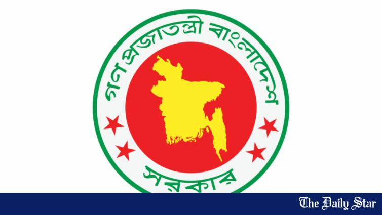
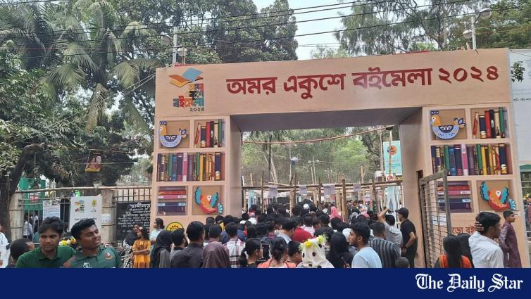
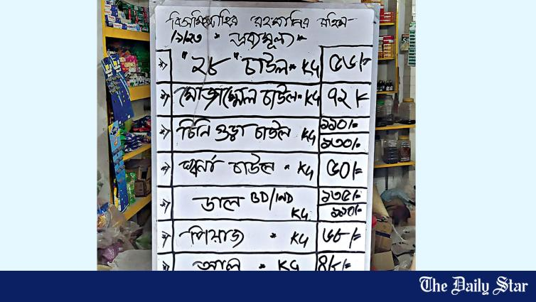
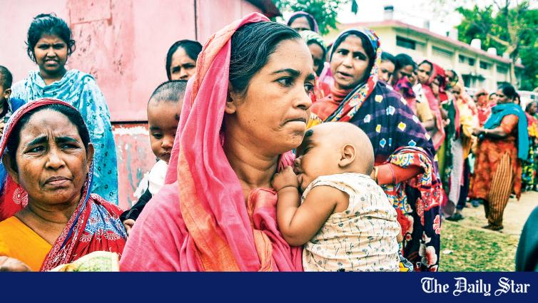

Last July, BNP leader Salahuddin Ahmed said his party wanted the viva marks of the Bangladesh Civil Service (BCS) examination reduced to 50 from 200 to limit scope for discrimination in Bangladesh Public Service Commission (BPSC) recruitment.
2026-05-04ReportingGovernance & public institutions
Deputy commissioners yesterday warned that the growing availability of drugs among youth, despite regular enforcement drives, poses a grave threat to the nation, urging the government to adopt tougher measures to curb the menace.
2026-01-29ReportingGovernance & public institutions
The information and broadcasting ministry yesterday published drafts of ordinances of the national media and broadcast commissions and sought opinions by Saturday.
Around 76 job seekers qualified under the Non-Government Teachers’ Registration and Certification Authority (NTRCA) were deprived of final recommendations despite meeting government qualifications, according to the applicants.
2024-10-17ReportingGovernance & public institutions
The Police Headquarters has recommended suspending the recruitment process for all 310 police cadre posts from the 44th to 47th Bangladesh Civil Service (BCS) examinations.
2024-08-18ReportingGovernance & public institutions
Public universities are set to reopen today amid a vacuum in the administrations after the resignation of at least 20 vice-chancellors, 10 pro-vice-chancellors, and many other officials.
The University Grants Commission recently banned any recruitment at Chittagong Medical University (CMU) after finding out about violation of recruitment policies by the university’s administration while appointing six staffers.

2024-05-06ReportingGovernance & public institutions
The government has made a fresh move to extend primary education up to class-VIII, six years after missing the original deadline set in the National Education Policy.

2024-02-29ReportingGovernance & public institutions
Uncertainty looms over holding the next edition of Amar Ekushey Boi Mela at Suhrawardy Udyan, as the government has decided to take over the ground for construction of a “cultural zone” called Sonar Bangla Sangskritik Boloy.

2023-09-16ReportingGovernance & public institutions
The commerce ministry’s price cap on onions, potatoes, and eggs barely made an impact on the runaway prices as shopkeepers in the capital have not complied with the order.

2022-12-01ReportingGovernance & public institutions
Eighty-year-old Renu Bibi left home in the capital’s Lalbagh before daybreak to queue up for subsidised rice and flour sold at a truck under the government’s Open Market Sale programme.
2021-05-08ReportingGovernance & public institutions
Thursday’s chaos on Rajshahi University campus can be attributable to the lack of effective steps after a government report mentioned that bribery, questionable recruitment and financial irregularities were rampant in the administration when Prof Abdus Sobhan was the vice chancellor.